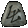
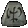
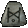
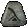
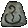
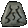
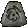
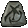
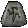
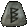

| Rune Words Lvl req. (may channge see description) Allowed Items |
Rune Order Requirements |
RuneWord Stats |
|
Ancients' Pledge Lvl req: 21 Shields |
Ral + Ort + Tal 3 Socket |
Resist Cold 30% All Resistances 13% 50% Enhanced Defense 10% Damage Taken Goes To Mana And the Mods from the Runes. |
|
Black Lvl req: 35 Clubs/Hammers/Maces/Druid Hammers |
  Thul + Io + Nef 3 Socket |
40% Chance of Crushing Blow 120% Enhanced Damage 15% Increased Attack Speed Magic Damage Reduced by 2 200 to Attack Rating Level 4 Corpse Explosion (12 Charges) And the Mods from the Runes. |
|
Fury Lvl req: 65 Melee Weapons |
  Jah + Gul + Eth 3 Socket |
209% Enhanced Damage 40% Increased Attack Speed Prevent Monster Heal 66% Chance of Open Wounds 12% Life stolen per hit 33% Deadly Strike 5 to Frenzy (Barbarian only) And the Mods from the Runes. |
|
Holy Thunder Lvl req: 21 Scepters |
Eth + Ral + Ort + Tal 4 Socket |
60% Enhanced Damage 20 - 60 Lightning Damage 10 to Maximum Damage Resist Lightning 60% Maximum Resist Lightning 5% 3 to Holy Shock (Paladin only) Level 7 Chain Lightning (60 Charges) And the Mods from the Runes. |
|
Honor Lvl req: 27 Melee Weapons |
  Amn + El + Ith + Tir + Sol 5 Socket |
160% Enhanced Damage 10 Replenish Life 1 to All Skills 200 to Attack Rating 25% Deadly Strike 10 to Strength And the Mods from the Runes. |
|
King's Grace Lvl req: 25 Swords/Scepters |
Amn + Ral + Thul 3 Socket |
100% Enhanced Damage 150 to Attack Rating 100% to Damage to Demons 50% to Damage to Undead 100 to Attack Rating against Demons 100 to Attack Rating against. Undead And the Mods from the Runes. |
|
Leaf Lvl req: 19 Staffs |
Tir + Ral 2 Socket |
3 to Fire Skills 2 Defense (Based on Character Level) Resist Cold 33% 3 to Inferno (Sorceress only) 3 to Fire Bolt (Sorceress only) 3 to Warmth (Sorceress only) And the Mods from the Runes. |
|
Lionheart Lvl req: 41 Body-Armors |
 Hel + Lum + Fal 3 Socket |
15 to Strength 20 to Vitality 15 to Dexterity 20% Enhanced Damage 50 to Life All Resistances 30% And the Mods from the Runes. |
|
Lore Lvl req: 27 Helms |
Ort + Sol 2 Socket |
10 to Energy 1 to All Skills 2 to Light Radius 2 to Mana after each Kill And the Mods from the Runes. |
|
Malice Lvl req: 15 Melee Weapons |
Ith + El + Eth 3 Socket |
100% Chance of Open Wounds -100 to Monster Defense Per Hit Prevent Monster Heal 33% Enhanced Damage -1 to Light Radius -5 Drain Life And the Mods from the Runes. |
|
Melody Lvl req: 39 Bows & Crossbows/Javelins/Throwing |
Shael + Ko + Nef 3 Socket |
50% Enhanced Damage 3 to Bow & Crossbow (Amazon only) 3 to Critical Strike (Amazon only) 3 to Dodge (Amazon only) 3 to Slow Missiles (Amazon only) 300% to Damage to Undead And the Mods from the Runes. |
|
Memory Lvl req: 37 Staffs |
Lum + Io + Sol + Eth 4 Socket |
20% Increased Maximum Mana Magic Damage Reduced by 7 50% Enhanced Defense 33% Faster Cast Rate 3 to Sorceress Skill Levels 3 to Energy Shield (Sorceress only) 2 to Static Field (Sorceress only) And the Mods from the Runes. |
|
Nadir Lvl req: 13 Helms |
Nef + Tir 2 Socket |
50% Enhanced Defense 10 to Defense -3 to Light Radius Level 13 Cloack of Shadows (9 Charges) -33% Extra Gold from monsters 5 to Strength And the Mods from the Runes. |
|
Radiance Lvl req: 27 Helms |
Nef + Sol + Ith 3 Socket |
5 to Light Radius 10 to Energy 10 to Vitality Magic Damage Reduced by 3 33 to Mana 75% Enhanced Defense And the Mods from the Runes. |
|
Rhyme Lvl req: 29 Shields |
Shael + Eth 2 Socket |
20% Faster Block Rate 7% Increase Chance of Blocking All Resistances 25% Cannot be Frozen 50% Extra Gold from monsters 25% Better Chance to Getting Magic Items And the Mods from the Runes. |
|
Silence Lvl req: 55 All Weapons |
 Dol + Eld + Hel + Ist + Tir + Vex 6 Socket |
4% Mana stolen per hit Hit Blind Target 200% Enhanced Damage 20% Increased Attack Speed All Resistances 75% 2 to All Skills 20% Faster Hit Recovery And the Mods from the Runes. |
|
Smoke Lvl req: 37 Body-Armors |
Nef + Lum 2 Socket |
250 Defense vs. Missile 75% Enhanced Defense All Resistances 50% 20% Faster Hit Recovery -1 to Light Radius Level 6 Weaken (18 Charges) And the Mods from the Runes. |
|
Stealth Lvl req: 17 Body-Armors |
Tal + Eth 2 Socket |
Magic Damage Reduced by 3 6 to Dexterity Maximum Stamina 15 50% Faster Run/Walk 25% Faster Cast Rate 25% Faster Hit Recovery And the Mods from the Runes. |
|
Steel Lvl req: 13 Swords/Axes/Maces |
Tir + El 2 Socket |
25% Increased Attack Speed 3 to Minimum Damage 3 to Maximum Damage 50% Chance of Open Wounds 20% Enhanced Damage And the Mods from the Runes. |
|
Strength Lvl req: 25 Melee Weapons |
Amn + Tir 2 Socket |
20 to Strength 35% Enhanced Damage 10 to Vitality 25% Chance of Crushing Blow And the Mods from the Runes. |
|
Venom Lvl req: 49 All Weapons |
Tal + Dol + Mal 3 Socket |
312 Poison Damage over 7 seconds Ignore Target's Defense Level 15 Poison Explosion (27 Charges) Level 13 Poison Nova (11 Charges) 7% Mana stolen per hit Level 20 Venom (5 Charges) 3 - 7 to Carrion Vine And the Mods from the Runes. |
|
Wealth Lvl req: 43 Body-Armors |
Lem + Ko + Tir 3 Socket |
250% Extra Gold from monsters 100% Better Chance to Getting Magic Items And the Mods from the Runes. |
|
White Lvl req: 35 Wands |
Dol + Io 2 Socket |
3 to Poison & Bone (Necromancer only) Magic Damage Reduced by 4 20% Faster Cast Rate 13 to Mana 3 to Bone Armor (Necromancer only) 2 to Bone Spear (Necromancer only) 4 to Skeleton Mastery (Necromancer only) And the Mods from the Runes. |
|
Zephyr Lvl req: 21 Bows & Crossbows/Throwing/Javelins |
Ort + Eth 2 Socket |
50% Faster Run/Walk 25% Increased Attack Speed 33% Enhanced Damage 66 to Attack Rating 7% Chance to cast Level 1 Twister when struck 25 to Defense And the Mods from the Runes. |
|
Chains of Honor Lvl req: 63 Body-Armors |
Dol + Um + Ber + Ist 4 Socket |
All Resistances 50% 70% Enhanced Defense 200% to Damage to Demons 100% to Damage to Undead 16% Life stolen per hit 2 to All Skills 20 to Strength And the Mods from the Runes. |
|
Bramble Lvl req: 61 Body-Armors |
 Ral + Ohm + Sur + Eth 4 Socket |
50% Faster Hit Recovery 300 to Defense Level 15 - 21 Thorns Aura when equipped 13 Life after each Kill 25% - 50% to Poison Skill Damage Resist Poison 100% Level 13 Spirit of Barbs (33 Charges) And the Mods from the Runes. |
|
Breath of the Dying Lvl req: 69 All Weapons |
Vex + Hel + El + Eld + Zod + Eth 6 Socket |
60% Increased Attack Speed 125% to Damage to Undead 24% - 30% Life stolen per hit Prevent Monster Heal 50% Chance to cast Level 20 Poison Nova when Kill an Enemy 350% - 400% Enhanced Damage 30 To All Attributes And the Mods from the Runes. |
|
Call to Arms Lvl req: 57 All Weapons |
Amn + Ral + Mal + Ist + Ohm 5 Socket |
40% Increased Attack Speed 200% - 240% Enhanced Damage 1 to All Skills 2 - 6 to Battle Command 1 - 6 to Battle Orders 1 - 4 to Battle Cry 12 Replenish Life And the Mods from the Runes. |
|
Crescent Moon Lvl req: 47 Axes/Swords/Polearms |
Shael + Um + Tir 3 Socket |
-35% to Enemy Lightning Resistance Ignore Target's Defense 180% - 220% Enhanced Damage Magic Absorb 9 - 11 Level 18 Summon Spirit Wolf (30 Charges) 7% Chance to cast Level 13 Static Field on striking 10% Chance to cast Level 17 Chain Lightning on striking And the Mods from the Runes. |
|
Delirium Lvl req: 51 Helms |
Lem + Ist + Io 3 Socket |
11% Chance to cast Level 18 Confuse on striking Level 17 Attract (60 Charges) 14% Chance to cast Level 13 Terror when struck 261 to Defense 6% Chance to cast Level 14 Mind Blast when struck 1% Chance to cast Level 50 Delirium when struck 2 to All Skills And the Mods from the Runes. |
|
Doom Lvl req: 67 Axes/Polearms/Hammers/Druid Hammers |
 Hel + Ohm + Um + Lo + Cham 5 Socket |
280% - 320% Enhanced Damage Level 12 Holy Freeze Aura when equipped 45% Increased Attack Speed Prevent Monster Heal -40% to -60% to Enemy Cold Resistance 2 to All Skills 5% Chance to cast Level 18 Volcano on striking And the Mods from the Runes. |
|
Enigma Lvl req: 65 Body-Armors |
Jah + Ith + Ber 3 Socket |
750 - 775 to Defense 14 Life after each Kill 90% Faster Run/Walk 0.75 to Strength (Based on Character Level) 2 to All Skills 1% Better Chance of Getting Magic Items (Based on Character Level) 1 to Teleport And the Mods from the Runes. |
|
Stone Lvl req: 47 Body-Armors |
Shael + Um + Pul + Lum 4 Socket |
220% - 260% Enhanced Defense Level 16 Clay Golem (16 Charges) 300 Defense vs. Missile Level 16 Molten Boulder (80 Charges) 16 to Strength 16 to Vitality 40% Faster Hit Recovery And the Mods from the Runes. |
|
Eternity Lvl req: 63 Melee Weapons |
Amn + Ber + Ist + Sol + Sur 5 Socket |
260% - 310% Enhanced Damage Indestructible Slows Target by 33% Level 8 Revive (88 Charges) 16 Replenish Life Regenerate Mana 16% Cannot be Frozen And the Mods from the Runes. |
|
Exile Lvl req: 57 Paladin Shields |
Vex + Ohm + Ist + Dol 4 Socket |
30% Faster Block Rate Freeze Target 220% - 260% Enhanced Defense Level 13 - 16 Defiance Aura when equipped 2 to Defensive Auras (Paladin only) 15% Chance to cast Level 5 Life Tap on striking Repair 1 Durability per 4 second And the Mods from the Runes. |
|
Famine Lvl req: 65 Axes/Hammers/Druid Hammers |
Fal + Ohm + Ort + Jah 4 Socket |
270% - 320% Enhanced Damage 24% Life stolen per hit 30% Increased Attack Speed Prevent Monster Heal 180 - 200 magic damage 50 - 200 to Elemental-Damage over 4 seconds Ethereal And the Mods from the Runes. |
|
Hand of Justice Lvl req: 67 All Weapons |
Sur + Cham + Amn + Lo 4 Socket |
33% Increased Attack Speed 280% - 330% Enhanced Damage Level 16 Holy Fire Aura when equipped 100% Chance to cast Level 36 Blaze when at Level-Up 100% Chance to cast Level 48 Meteor when you Die Ignore Target's Defense -20% to Enemy Fire Resistance And the Mods from the Runes. |
|
Heart of the Oak Lvl req: 55 Staffs/Maces |
Ko + Vex + Pul + Thul 4 Socket |
40% Faster Cast Rate Level 25 Oak Sage (5 Charges) 15% Increased Maximum Mana 3 to All Skills 20 Replenish Life All Resistances 30% - 40% Level 14 Raven (60 Charges) And the Mods from the Runes. |
|
Kingslayer Lvl req: 53 Swords/Axes |
Mal + Um + Gul + Fal 4 Socket |
30% Increased Attack Speed 230% - 270% Enhanced Damage 25% Targets Defense 33% Chance of Crushing Blow 25% Chance of Open Wounds 1 to Vengeance 40% Extra Gold from monsters And the Mods from the Runes. |
|
Passion Lvl req: 43 All Weapons |
Dol + Ort + Eld + Lem 4 Socket |
160% - 210% Enhanced Damage 1 to Zeal 50 - 80% Bonus to Attack Rating 1 to Berserk 25% Increased Attack Speed Level 3 Heart of Wolverine (12 Charges) Hit Blind Target And the Mods from the Runes. |
|
Gloom Lvl req: 47 Body-Armors |
Fal + Um + Pul 3 Socket |
170% - 230% Enhanced Defense All Resistances 30% 15% Chance to cast Level 3 Dim Vision when struck 10% Faster Hit Recovery 5% Damage Taken Goes To Mana -3 to Light Radius Half Freeze Duration And the Mods from the Runes. |
|
Sanctuary Lvl req: 49 Shields |
Ko + Ko + Mal 3 Socket |
7% Increase Chance of Blocking 20% Faster Block Rate 130% - 160% Enhanced Defense 250 Defense vs. Missile All Resistances 50% - 70% 20% Faster Hit Recovery Level 12 Slow Missiles (60 Charges) And the Mods from the Runes. |
|
Chaos Lvl req: 57 Assassin's Claws |
Fal + Ohm + Um 3 Socket |
15 Life after each Demon Kill 240% - 290% Enhanced Damage 216 - 471 magic damage 1 to Whirlwind 35% Increased Attack Speed 9% Chance to cast Level 11 Frozen Orb on striking 11% Chance to cast Level 9 Charged Bolt on striking And the Mods from the Runes. |
|
Beast Lvl req: 63 Axes/Scepters/Hammers/Druid Hammers |
Ber + Tir + Um + Mal + Lum 5 Socket |
40% Increased Attack Speed Level 9 Fanaticism Aura when equipped 240% - 270% Enhanced Damage 25 - 40 to Strength Level 13 Summon Grizzly (5 Charges) 3 to Werebear 3 to Lycanthropy And the Mods from the Runes. |
|
Serendipity Lvl req: 25 Polearms |
Amn + Amn 2 Socket |
120% Enhanced Damage 50% Chance to cast Level 2 Inner Sight on striking 20 to Energy Regenerate Mana 50% 20% Faster Cast Rate 5-25% chance to defend attacks And the Mods from the Runes. |
|
Shadow Lvl req: 45 Bows & Crossbows/Throwing/Javelins |
Pul + Sol + Shael + Sol 4 Socket |
166% Enhanced Damage 1% - 200% to Maximum Cold Damage (Increases Near ) Cold Duration 3 - 12 seconds 150% Faster Run/Walk 25% Chance to cast Level 12 Cloack of Shadows when struck Level 10 Bone Wall (50 Charges) And the Mods from the Runes. |
|
Shadow of Doubt Lvl req: 13 Wands |
El + Tir 2 Socket |
1 - 3 to Curses (Necromancer only) 1 - 3 to Poison & Bone (Necromancer only) 1 - 3 to Summoning (Necromancer only) 15% Faster Cast Rate 10% to Poison Skill Damage And the Mods from the Runes. |
|
Siren's Song Lvl req: 43 Circlets |
Lem + Shael 2 Socket |
2 to All Skills 40% Increased Maximum Mana 25% Faster Cast Rate 10 - 20 To All Attributes 30% - 50% Better Chance to Getting Magic Items 44% Chance to cast Level 3 Confuse when struck 1 Defense (Based on Character Level) And the Mods from the Runes. |
|
Sorrow Lvl req: 29 Hammers/Druid Hammers |
Shael + Hel 2 Socket |
160% - 200% Enhanced Damage 20% Increased Attack Speed 6% Mana stolen per hit Level 20 Clay Golem (5 Charges) 6 - 9 Life after each Kill Regenerate Mana 50% -2 Drain Life And the Mods from the Runes. |
|
Spirit Lvl req: 25 Swords/Shields |
Tal + Thul + Ort + Amn 4 Socket |
2 to All Skills 25% - 35% Faster Cast Rate 55% Faster Hit Recovery 22 to Vitality 250 Defense vs. Missile 89 - 112 to Mana Magic Absorb 3 - 8 And the Mods from the Runes. |
|
Splendor Lvl req: 37 Shields |
Eth + Lum 2 Socket |
1 to All Skills 10% Faster Cast Rate 20% Faster Block Rate 60% - 100% Enhanced Defense 50% Extra Gold from monsters 20% Better Chance to Getting Magic Items 3 to Light Radius And the Mods from the Runes. |
|
Starlight Lvl req: 79 All Weapons/All Armors/Shields |
Zod + Hel + Ist + El 4 Socket |
2 to All Skills 35 - 140 to Minimum Damage 35 - 140 to Maximum Damage 100% - 200% Enhanced Defense Requirements -80% 150% - 300% Better Chance to Getting Magic Items 20% Faster Hit Recovery And the Mods from the Runes. |
|
Still Water Lvl req: 53 Amazon Bows |
Gul + Um + Mal + Nef 4 Socket |
1 to Amazon Skill Levels 20% Increased Attack Speed 30 - 150 to Minimum Damage 30 - 150 to Maximum Damage 80% - 120% Enhanced Damage 2 to Bow & Crossbow (Amazon only) 15 - 20 Life after each Kill 100 - 150 to Cold Damage And the Mods from the Runes. |
|
Duress Lvl req: 47 Body-Armors |
Shael + Um + Thul 3 Socket |
20% Faster Hit Recovery 10% - 20% Enhanced Damage 37 - 133 to Cold Damage 15% Chance of Crushing Blow 33% Chance of Open Wounds 150% - 200% Enhanced Defense -20% Slower Stamina Drain And the Mods from the Runes. |
|
Storm Lvl req: 65 Spears |
Jah + Um + Ohm + Ort + Nef 5 Socket |
333% Enhanced Damage 20% Increased Attack Speed 16% Chance to cast Level 21 Lightning on striking 10 to Thunder Storm Resist Lightning 100% Lightning Absorb 25% 1% - 2% to Experience Gained And the Mods from the Runes. |
|
Tempest Lvl req: 43 Assassin's Claws |
Lem + Thul 2 Socket |
30 - 70 to Cold Damage 100 - 200 Fire-Damage 1 - 300 Lightning Damage 50 - 150 to Cold Damage 2 to Assassin Skill Levels 3 to Traps (Assassin only) 150% - 200% Enhanced Damage And the Mods from the Runes. |
|
Temptation Lvl req: 21 Maces |
Ort + Nef + El 3 Socket |
2% - 3% to Experience Gained 176% Enhanced Damage 2 to All Skills -10 To All Attributes 40% Increased Attack Speed And the Mods from the Runes. |
|
Terror Lvl req: 49 Necromancer Shrunken Heads |
Lum + Mal 2 Socket |
100% Chance to cast Level 10 Terror when struck 2 to Necromancer Skill Levels 3 to a Skill from Amplify Damage to Revive 1.5 Defense (Based on Character Level) 25% Faster Cast Rate 1% Better Chance of Getting Magic Items (Based on Character Level) 3 to Fanaticism And the Mods from the Runes. |
|
Night Lvl req: 59 Body-Armors |
Hel + Lo + Ohm 3 Socket |
150% - 300% Enhanced Defense 1% - 300% Better Chance of Getting Magic Items (Increases Near Night) 1 - 50 to Vitality (Increases Near Night) 1 - 500 Defense (Increases Near Night) 1 - 75 to Maximum Damage (Increases Near Night) 1% - 300% Extra Gold from Monsters (Increases Near Night) 1 - 25 to Energy (Increases Near Night) And the Mods from the Runes. |
|
Oath Lvl req: 49 Swords/Axes/Maces |
Shael + Pul + Mal + Lum 4 Socket |
30% Chance to cast Level 20 Bone Spirit on striking Indestructible 30% Increased Attack Speed 210% - 340% Enhanced Damage Magic Absorb 10 - 15 Level 16 Heart of Wolverine (20 Charges) Level 17 Iron Golem (14 Charges) And the Mods from the Runes. |
|
Obedience Lvl req: 41 Polearms |
Hel + Ko + Thul + Eth + Fal 5 Socket |
30% Chance to cast Level 21 Enchant when Kill an Enemy 40% Faster Hit Recovery 370% Enhanced Damage -25% to Enemy Fire Resistance 40% Chance of Crushing Blow 200 - 300 to Defense All Resistances 20% - 30% And the Mods from the Runes. |
|
Oblivion Lvl req: 47 Barbarian Helms |
Um + Fal + Ko 3 Socket |
2 to Barbarian Skill Levels 115% - 160% Enhanced Defense 3 to a Skill from Bash to Battle Command 12% Chance to cast Level 9 Amplify Damage on striking 1.5 to Life (Based on Character Level) 20% Increased Attack Speed 1 - 100 Chance of Crushing Blow (Increases Near Dwan) And the Mods from the Runes. |
|
Obsession Lvl req: 23 Clubs/Druid Hammers |
Thul + El 2 Socket |
20 - 40 to Minimum Damage 20 - 40 to Maximum Damage Freeze Target 8% - 12% Life stolen per hit 100% Extra Gold from monsters 40% Better Chance to Getting Magic Items And the Mods from the Runes. |
|
Harmony Lvl req: 39 Bows & Crossbows/Throwing/Javelins |
Tir + Ith + Sol + Ko 4 Socket |
Level 10 Vigor Aura when equipped 200% - 275% Enhanced Damage 2 to Light Radius 55 - 160 to Elemental-Damage over 1.32 seconds 2 - 6 to Valkyrie Regenerate Mana 20% Level 20 Revive (25 Charges) And the Mods from the Runes. |
|
Hatred Lvl req: 35 All Weapons |
Io + Thul 2 Socket |
140% - 190% Enhanced Damage 1 to All Skills 50% Better Chance to Getting Magic Items Knockback Freeze Target 1% - 500% Damage to Demons (Increases Near Day) And the Mods from the Runes. |
|
Flame Lvl req: 55 Body-Armors |
Vex + Ral + Ko 3 Socket |
15% - 20% to Fire Skill Damage -15% to -20% to Enemy Fire Resistance Fire Absorb 15% - 20% Level 17 Holy Fire Aura when equipped 20% Chance to cast Level 19 Fire Ball when struck 8% Chance to cast Level 13 Fissure on attack 5 to Light Radius And the Mods from the Runes. |
|
Fortitude Lvl req: 59 Body-Armors/All Weapons |
El + Sol + Dol + Lo 4 Socket |
20% Chance to cast Level 15 Chilling Armor when struck 25% Faster Cast Rate 200% Enhanced Defense 300% Enhanced Damage All Resistances 25% - 30% 12% Damage Taken Goes To Mana 1 to Life (Based on Character Level) And the Mods from the Runes. |
|
Fortune Lvl req: 44 All Weapons/All Armors/Shields |
Fal + Io 2 Socket |
2% Better Chance of Getting Magic Items (Based on Character Level) 1 to All Skills 30 - 50 to life All Resistances 10% 200% Extra Gold from monsters And the Mods from the Runes. |
|
Nature's Kingdom Lvl req: 25 Druid Pelts |
Amn + Ith 2 Socket |
1 to Druid Skill Levels 75% - 100% Enhanced Defense 40 - 60 to Mana 20% Faster Cast Rate All Resistances 20% 10 To All Attributes And the Mods from the Runes. |
|
Glory Lvl req: 51 Body-Armors |
Ist + Ist + Ist + Ist 4 Socket |
2 to All Skills 25% Faster Hit Recovery 35% Faster Cast Rate 25% Increased Maximum Mana 25% Increased Maximum Life 75% - 125% Enhanced Defense Requirements -30% And the Mods from the Runes. |
|
Faith Lvl req: 65 Bows & Crossbows/Javelins/Throwing |
Ohm + Jah + Lem + Eld 4 Socket |
Level 12 - 15 Fanaticism Aura when equipped 1 - 2 to All Skills 280% Enhanced Damage 300% Bonus to Attack Rating All Resistances 15% 10% Chance, to reanimate the target as Returned 120 Fire Damage And the Mods from the Runes. |
|
Friendship Lvl req: 28 Maces |
Hel + Amn 2 Socket |
-1% - -2% to Experience Gained Slain Monsters Rest in peace 133% Enhanced Damage 25 - 50 to Minimum Damage 25 - 50 to Maximum Damage 66% Chance of Crushing Blow 34% Deadly Strike And the Mods from the Runes. |
|
Armageddon Lvl req: 74 Swords |
Ral + Ort + Thul + Cham + Ber + Hel 6 Socket |
275% - 350% Enhanced Damage 50 - 300 to Elemental-Damage over 8 seconds 40% Chance to cast Level 20 Blizzard on striking 40% Chance to cast Level 20 Chain Lightning when struck 30% Increased Attack Speed All Resistances 35% And the Mods from the Runes. |
|
Authority Lvl req: 75 Helms |
Cham + Zod + Ber 3 Socket |
2 to All Skills 1.5% Better Chance of Getting Magic Items (Based on Character Level) 160% - 200% Enhanced Defense 16% Chance to cast Level 9 Weaken on striking Slows Target by 20% 25% Deadly Strike And the Mods from the Runes. |
|
Beauty Lvl req: 31 Amazon Bows |
Tir + Dol 2 Socket |
3 to Bow & Crossbow (Amazon only) 30 - 60 to Minimum Damage 30 - 60 to Maximum Damage Knockback Slows Target by 15% 16% Life stolen per hit Ignore Target's Defense 50% Chance of Open Wounds And the Mods from the Runes. |
|
Blood Lvl req: 58 All Weapons/All Armors/Shields |
Mal + Shael 2 Socket |
200% - 250% Enhanced Damage 125 - 175 to Defense 2 to All Skills 10% - 15% Increased Maximum Life Damage Reduced by 10% - 15% And the Mods from the Runes. |
|
Bone Lvl req: 63 Necromancer Shrunken Heads |
Ber + Um 2 Socket |
2 to Necromancer Skill Levels 4 to Poison & Bone (Necromancer only) 3 to Bone Armor (Necromancer only) 3 to Bone Wall (Necromancer only) 3 to Bone Spear (Necromancer only) 3 to Bone Prison (Necromancer only) 3 to Bone Spirit (Necromancer only) And the Mods from the Runes. |
|
Brand Lvl req: 65 Bows & Crossbows/Javelins/Throwing |
Jah + Lo + Mal + Gul 4 Socket |
35% Chance to cast Level 14 Amplify Damage when struck 100% Chance to cast Level 18 Bone Spear on striking Fire Explosive Arrowsor Bolts 260% - 340% Enhanced Damage 280% - 330% to Damage to Demons Knockback And the Mods from the Runes. |
|
Broken Promise Lvl req: 75 All Weapons |
Cham + Vex + Amn + Shael + Lo 5 Socket |
350% - 400% Enhanced Damage 2 to All Skills 3 to Maximum Damage (Based on Character Level) -2% - -3% to Experience Gained 18% Chance to cast Level 18 Bone Spirit on striking 1 - 100 Chance of Crushing Blow (Increases Near Dusk) And the Mods from the Runes. |
|
Chance Lvl req: 15 Shields |
Eth + Ith + Tir 3 Socket |
5% Increase Chance of Blocking 20% Faster Block Rate 25 to Mana 15% Faster Cast Rate 20% - 30% Better Chance to Getting Magic Items 75% Extra Gold from monsters And the Mods from the Runes. |
|
Sting Lvl req: 17 Bows & Crossbows/Throwing/Javelins |
Nef + Tal + Eth 3 Socket |
25 - 40 to Maximum Damage 15% Increased Attack Speed 5% - 8% Mana stolen per hit 3 to Enchant 7 to Penertate 5 to Pierce 50% - 150% Enhanced Damage And the Mods from the Runes. |
|
Darkness Lvl req: 69 Assassin's Claws |
Zod + Amn + Vex 3 Socket |
3 to Assassin Skill Levels 1 - 100 to Strength (Increases Near Dusk) 1 - 100 to Vitality (Increases Near Dwan) 75 - 150 to Minimum Damage 75 - 150 to Maximum Damage All Resistances 20% - 40% Damage Reduced by 15% 1% Better Chance of Getting Magic Items (Based on Character Level) And the Mods from the Runes. |
|
Daylight Lvl req: 65 Sorceress Orbs |
Jah + Fal + Um 3 Socket |
3 to Sorceress Skill Levels Regenerate Mana 50% 30% Faster Cast Rate Level 4 Conviction Aura when equipped Level 18 Lower Resist (33 Charges) 50% Increased Maximum Mana 25% Increased Maximum Life And the Mods from the Runes. |
|
Death Lvl req: 55 Swords/Axes |
Hel + El + Vex + Ort + Gul 5 Socket |
100% Chance to cast Level 44 Chain Lightning when you Die 25% Chance to cast Level 18 Glacial Spike on attack Indestructible 300% - 385% Enhanced Damage 50% Chance of Crushing Blow 0.5% Deadly Strike (Based on Character Level) Level 22 Blood Golem (15 Charges) And the Mods from the Runes. |
|
Deception Lvl req: 37 Polearms |
Io + Dol + Lum 3 Socket |
165% - 205% Enhanced Damage 16% Life stolen per hit 1 to Teleport 40% Faster Hit Recovery 1 to Maximum Damage (Based on Character Level) 15% to Fire Skill Damage Level 18 Meteor (150 Charges) And the Mods from the Runes. |
|
Desire Lvl req: 13 All Weapons/All Armors/Shields |
El + Tir + El 3 Socket |
30% - 50% Enhanced Damage 30% - 50% Enhanced Defense 5 To All Attributes 20% - 25% Better Chance to Getting Magic Items And the Mods from the Runes. |
|
Despair Lvl req: 53 Spears |
Gul + Mal + Shael + Shael + El 5 Socket |
260% - 300% Enhanced Damage 32% Chance to cast Level 6 Weaken on striking Slows Target by 20% 7 to Fend 35% Better Chance to Getting Magic Items 9% Mana stolen per hit 5-25% chance to defend attacks And the Mods from the Runes. |
|
Elation Lvl req: 67 Amazon Bows |
Shael + Nef + Cham + Thul + Vex 5 Socket |
40 - 75 to Minimum Damage 4.5 to Maximum Damage (Based on Character Level) 100% Chance to cast Level 8 Nova on striking Prevent Monster Heal 100% Chance to cast Level 60 Nova when you Die 20% - 25% to Cold Skill Damage 20% - 25% to Fire Skill Damage And the Mods from the Runes. |
|
Destruction Lvl req: 65 Swords/Polearms |
Vex + Lo + Ber + Jah + Ko 5 Socket |
23% Chance to cast Level 12 Volcano on striking 5% Chance to cast Level 23 Molten Boulder on striking 100% Chance to cast Level 45 Meteor when you Die 15% Chance to cast Level 22 Nova on attack 350% Enhanced Damage 100 - 180 magic damage Prevent Monster Heal And the Mods from the Runes. |
|
Dragon Lvl req: 61 Body-Armors/Shields |
Sur + Lo + Sol 3 Socket |
20% Chance to cast Level 18 Venom when struck 12% Chance to cast Level 15 Hydra on striking Level 14 Holy Fire Aura when equipped 360 to Defense 230 Defense vs. Missile 3 - 5 To All Attributes 0.38 to Strength (Based on Character Level) And the Mods from the Runes. |
|
Dread Lvl req: 32 Body-Armors |
Dol + El + Ith 3 Socket |
100% - 125% Enhanced Defense 13% Chance to cast Level 13 Charged Bolt on striking 80% Faster Run/Walk 6 - 8 Life after each Kill 0.5 to Strength (Based on Character Level) 0.5 to Dexterity (Based on Character Level) And the Mods from the Runes. |
|
Dream Lvl req: 65 Shields/Helms |
Io + Jah + Pul 3 Socket |
10% Chance to cast Level 15 Confuse when struck Level 15 Holy Shock Aura when equipped 20% - 30% Faster Hit Recovery 150 - 220 to Defense 0.63 to Mana (Based on Character Level) All Resistances 5% - 20% 15% - 25% Better Chance to Getting Magic Items And the Mods from the Runes. |
|
Revenge Lvl req: 25 All Armors/Shields |
Thul + Eld 2 Socket |
1 to Sorceress Skill Levels 50 - 75 to Mana 15% Faster Cast Rate 1% - 2% to Experience Gained Regenerate Mana 60 - 70% Resist Magic 5% - 10% And the Mods from the Runes. |
|
Edge Lvl req: 25 Bows & Crossbows/Javelins/Throwing |
Tir + Tal + Amn 3 Socket |
Level 15 Thorns Aura when equipped 35% Increased Attack Speed 320% - 380% to Damage to Demons 280% to Damage to Undead Prevent Monster Heal Reduces all vendor Prices 15% 5 - 10 To All Attributes And the Mods from the Runes. |
|
Enlightenment Lvl req: 47 Druid Pelts |
Tir + Um + Lum 3 Socket |
2 to Druid Skill Levels 3 to a Skill from Raven to Hurricane Regenerate Mana 75% 3 to Elemantal (Druid only) 30% Chance to cast Level 20 Cyclone Armor when struck Damage Reduced by 20% - 25% 20% Faster Block Rate And the Mods from the Runes. |
|
Envy Lvl req: 41 All Weapons |
Fal + Ko + Lum + Io 4 Socket |
222% Enhanced Damage 30% Increased Attack Speed 6% Mana stolen per hit 12% Life stolen per hit 1% to Experience Gained 35% Better Chance to Getting Magic Items All Resistances 25% And the Mods from the Runes. |
|
Heaven's Will Lvl req: 31 Paladin Shields |
Dol + Eld 2 Socket |
1 to Paladin Skill Levels 17% Increase Chance of Blocking 30% Faster Block Rate 30% - 50% Enhanced Damage Slain Monsters Rest in peace 6 to Fist of the Heavens (Paladin only) And the Mods from the Runes. |
|
Holy Tears Lvl req: 35 Scepters |
Io + Tir + Shael 3 Socket |
160% - 200% Enhanced Damage 16% Chance to cast Level 9 Fist of the Heavens on striking 300% to Damage to Demons 35% Bonus to Attack Rating Slows Target by 35% 5 to Zeal 20% Increased Attack Speed And the Mods from the Runes. |
|
Humility Lvl req: 78 Body-Armors |
Zod + Um + Ith + Cham 4 Socket |
10 - 15 to Shout 10 - 15 to Battle Orders 10 - 15 to Battle Command 10 - 15 to Shiver Armor 10 - 15 to Valkyrie Level 5 - 7 Salvation Aura when equipped And the Mods from the Runes. |
|
Hunger Lvl req: 29 Shields |
Amn + Hel 2 Socket |
5% - 10% Increase Chance of Blocking Damage Reduced by 10% - 15% All Resistances 20% Resist Magic 20% 10% Life stolen per hit -1 Drain Life And the Mods from the Runes. |
|
Ice Lvl req: 65 Bows & Crossbows/Javelins/Throwing |
Amn + Shael + Jah + Lo 4 Socket |
100% Chance to cast Level 40 Blizzard when at Level-Up 25% Chance to cast Level 22 Frost Nova on striking Level 18 Holy Freeze Aura when equipped 140% - 210% Enhanced Damage 25% - 30% to Cold Skill Damage -20% to Enemy Cold Resistance 3.13% Extra Gold from Monsters (Based on Character Level) And the Mods from the Runes. |
|
Infinity Lvl req: 63 Polearms |
Ber + Mal + Ber + Ist 4 Socket |
50% Chance to cast Level 20 Chain Lightning when Kill an Enemy Level 12 Conviction Aura when equipped 70% Faster Run/Walk 255% - 325% Enhanced Damage -45% to -55% to Enemy Lightning Resistance 0.25 to Vitality (Based on Character Level) Level 21 Cyclone Armor (30 Charges) And the Mods from the Runes. |
|
Innocence Lvl req: 55 Hammers/Druid Hammers |
Vex + Lem + Ist 3 Socket |
190% - 240% Enhanced Damage 2 to Maximum Damage (Based on Character Level) Repair 1 Durability per 6.67 second 2 to All Skills 25% Increased Maximum Life 15 - 25 To All Attributes -1% - -2% to Experience Gained And the Mods from the Runes. |
|
Insight Lvl req: 27 Polearms/Staffs |
Ral + Tir + Tal + Sol 4 Socket |
Level 12 - 17 Meditation Aura when equipped 35% Faster Cast Rate 200% - 260% Enhanced Damage 180 - 250% Bonus to Attack Rating 1 - 6 to Critical Strike 5 To All Attributes 5-25% chance to defend attacks And the Mods from the Runes. |
|
Jealousy Lvl req: 17 Spears |
Tal + Eld 2 Socket |
122% Enhanced Damage 14% Life stolen per hit 7% Mana stolen per hit 3 to Jab 3 to Spear Mastery 20% Increased Attack Speed 5-25% chance to defend attacks And the Mods from the Runes. |
|
Judgement Lvl req: 47 Paladin Shields |
Um + Hel + Um 3 Socket |
2 to Paladin Skill Levels Ignore Target's Defense 8% - 12% Increase Chance of Blocking 20 - 30 to Maximum Damage 2% Chance to cast Level 35 Holy Shield when struck 50% Chance to cast Level 5 Decrepify when struck Magic Damage Reduced by 35 - 50 And the Mods from the Runes. |
|
Knight's Vigil Lvl req: 69 All Armors/Shields |
Ber + Lem + Um + Ist 4 Socket |
2 to Paladin Skill Levels Level 8 - 12 Meditation Aura when equipped 40% Faster Cast Rate 7% - 10% Increase Chance of Blocking 20% Faster Block Rate 10 - 15 Replenish Life And the Mods from the Runes. |
|
Last Wish Lvl req: 65 Swords/Axes/Hammers/Druid Hammers |
Jah + Mal + Jah + Sur + Jah + Ber 6 Socket |
6% Chance to cast Level 11 Fade when struck 10% Chance to cast Level 18 Life Tap on striking 20% Chance to cast Level 20 Charged Bolt on attack Level 17 Might Aura when equipped 330% - 375% Enhanced Damage 40% - 50% Chance of Crushing Blow 0.5% Better Chance of Getting Magic Items (Based on Character Level) And the Mods from the Runes. |
|
Law Lvl req: 13 Axes |
Hel + Hel 2 Socket |
120% - 170% Enhanced Damage 15% Increased Attack Speed 48 to Life 24 to Mana Slows Target by 30% Slain Monsters Rest in peace And the Mods from the Runes. |
|
Lawbringer Lvl req: 43 Swords/Hammers/Scepters/Druid Hammers |
Amn + Lem + Ko 3 Socket |
20% Chance to cast Level 15 Decrepify on striking Level 18 Sanctuary Aura when equipped 50% Targets Defense 150 - 210 Fire-Damage 130 - 180 to Cold Damage Slain Monsters Rest in peace 200 - 250 Defense vs. Missile And the Mods from the Runes. |
|
Lightning Lvl req: 25 All Weapons |
Ort + Ort + Amn 3 Socket |
Resist Lightning 35% - 50% 100% - 175% Enhanced Damage 20% Increased Attack Speed 15% Chance to cast Level 9 Lightning on striking Level 2 Holy Shock Aura when equipped Lightning Absorb 8 - 10 And the Mods from the Runes. |
|
Loyalty Lvl req: 55 Shields |
Vex + Dol 2 Socket |
Level 5 - 9 Thorns Aura when equipped Maximum Resist Lightning 5% Maximum Resist Cold 5% Maximum Resist Poison 5% All Resistances 100% 1% - 2% to Experience Gained 12% - 17% Increase Chance of Blocking And the Mods from the Runes. |
|
Lust Lvl req: 49 Wands |
Shael + Mal 2 Socket |
2 to Necromancer Skill Levels 2% to Experience Gained 35% Increased Maximum Mana All Resistances 35% - 50% Level 8 Holy Shock Aura when equipped 40% Better Chance to Getting Magic Items 1% - 300% Extra Gold from Monsters (Increases Near Dusk) And the Mods from the Runes. |
|
Madness Lvl req: 36 All Armors/Shields |
Io + Eth + Dol 3 Socket |
9% Chance to cast Level 5 Confuse when struck 12% Chance to cast Level 16 Terror on striking 15% Increased Attack Speed 1 to All Skills 15% Faster Block Rate 35 - 50 to life And the Mods from the Runes. |
|
Mist Lvl req: 57 Clubs/Druid Hammers |
Ohm + Hel + Um 3 Socket |
250% - 300% Enhanced Damage 33% Chance to cast Level 15 Fissure when struck Level 7 Defiance Aura when equipped 33% Chance of Crushing Blow 5% Increase Chance of Blocking 1 to Maximum Damage (Based on Character Level) 15 to Strength And the Mods from the Runes. |
|
Morning Lvl req: 74 Polearms |
Mal + Ith + Ber + Cham + Zod + Ist 6 Socket |
50% Increased Attack Speed 300% - 360% Enhanced Damage 3 to Druid Skill Levels 20 to Pole Arm Mastery 100% Chance to cast Level 20 Static Field when Kill an Enemy All Resistances 25% And the Mods from the Runes. |
|
Mystery Lvl req: 69 Druid Pelts |
Shael + Zod + Gul 3 Socket |
3 to Druid Skill Levels 15% Increased Maximum Mana 15% Increased Maximum Life All Resistances 30% - 50% Level 6 Concentration Aura when equipped 20% Increased Attack Speed 1% to Experience Gained And the Mods from the Runes. |
|
Myth Lvl req: 71 Spears |
Fal + Cham + Ber + Hel + Tir + Ral 6 Socket |
200 - 400 to Minimum Damage 200 - 400 to Maximum Damage Repair 1 Durability per 6.67 second 80% - 120% Enhanced Damage 3 to All Skills All Resistances 50% 100% Chance to cast Level 60 Nova when you Die And the Mods from the Runes. |
|
Patience Lvl req: 19 All Weapons/All Armors/Shields |
Nef + Eld + Ral 3 Socket |
20% Faster Hit Recovery 1% - 2% to Experience Gained 20 - 25 to life 3 - 5 Life after each Kill 2 to Mana after each Kill 60% Faster Run/Walk And the Mods from the Runes. |
|
Patter Lvl req: 57 Bows & Crossbows/Throwing/Javelins |
Ohm + Ohm 2 Socket |
2 to Maximum Damage (Based on Character Level) All Resistances 75% 40% Faster Hit Recovery 40% Increased Attack Speed 2 to All Skills Damage Reduced by 25% 100% Chance to cast Level 12 Attract when struck And the Mods from the Runes. |
|
Peace Lvl req: 18 Melee Weapons |
Tir + Eth + El 3 Socket |
20 - 40 to Minimum Damage 20 - 40 to Maximum Damage 20% Increased Attack Speed 20% Faster Hit Recovery 20% Faster Block Rate All Resistances 15% And the Mods from the Runes. |
|
Penitence Lvl req: 15 All Armors/Shields |
Ith + Tir 2 Socket |
5% Faster Block Rate 15% Faster Hit Recovery Repair 1 Durability per 10 second Half Freeze Duration Poison Length Reduced by 50% And the Mods from the Runes. |
|
Peril Lvl req: 73 Bows & Crossbows/Throwing/Javelins |
Cham + Lo + Ber + Ber + Lo + Cham 6 Socket |
100 - 200 to Minimum Damage 300 - 400 to Maximum Damage 75% Increased Attack Speed 1 to All Skills 1% Better Chance of Getting Magic Items (Based on Character Level) 20 - 30 To All Attributes And the Mods from the Runes. |
|
Pestilence Lvl req: 39 Axes |
Sol + Ko + Io 3 Socket |
800 Poison Damage over 4 seconds Prevent Monster Heal 20% - 35% Better Chance to Getting Magic Items 188% Enhanced Damage 20% to Poison Skill Damage 3 to Poison Explosion Poison Length Reduced by 50% And the Mods from the Runes. |
|
Phoenix Lvl req: 65 All Weapons/Shields |
Vex + Vex + Lo + Jah 4 Socket |
100% Chance to cast Level 40 Blaze when at Level-Up 40% Chance to cast Level 22 Firestorm on striking Level 10 - 15 Redemption Aura when equipped 350% - 436% Enhanced Damage -28% to Enemy Fire Resistance 350 - 400 Defense vs. Missile Fire Absorb 15 - 21 And the Mods from the Runes. |
|
Piety Lvl req: 43 Helms |
Lem + Nef + Shael 3 Socket |
90% - 125% Enhanced Defense 20 to Energy 1 to Mana (Based on Character Level) 1 to All Skills 20% Faster Cast Rate All Resistances 15% - 25% Resist Magic 15% - 25% And the Mods from the Runes. |
|
Pillar of Faith Lvl req: 47 Spears |
Fal + Fal + Um + Amn 4 Socket |
230% Enhanced Damage Repair 1 Durability per 5 second 400 - 500 to Defense Level 12 Cleansing Aura when equipped 20% Increased Attack Speed 75 to Life Fire Absorb 15% And the Mods from the Runes. |
|
Plague Lvl req: 66 Maces |
Sur + Um + Mal + Shael + Shael 5 Socket |
200% - 250% Enhanced Damage 1800 Poison Damage over 6 seconds Resist Poison 80% Maximum Resist All 10% 100% Deadly Strike 15% Chance to cast Level 27 Poison Nova on striking And the Mods from the Runes. |
|
Praise Lvl req: 65 Hammers/Druid Hammers |
Fal + Gul + Ohm + Shael 4 Socket |
280% - 350% Enhanced Damage Ignore Target's Defense 100% Chance to cast Level 47 Frozen Orb when you Die 100% Chance to cast Level 10 Glacial Spike when struck 1% - 200% Better Chance of Getting Magic Items (Increases Near Day) 20% Life stolen per hit And the Mods from the Runes. |
|
Prayer Lvl req: 27 All Weapons/All Armors/Shields |
Hel + Eth + Thul 3 Socket |
10 - 30 to Minimum Damage 10 - 30 to Maximum Damage 50 - 100 to Defense 20% Increased Attack Speed 7% - 10% Increase Chance of Blocking Level 10 - 14 Prayer Aura when equipped All Resistances 15% - 25% And the Mods from the Runes. |
|
Pride Lvl req: 67 Polearms |
Cham + Sur + Io + Lo 4 Socket |
25% Chance to cast Level 17 Fire Wall when struck Level 17 - 19 Concentration Aura when equipped 260 - 300% Bonus to Attack Rating 1% Damage to Demons (Based on Character Level) 50 - 280 Lightning Damage 8 Replenish Life 5-25% chance to defend attacks And the Mods from the Runes. |
|
Principle Lvl req: 41 Amazon Spears |
Shael + Fal + Ko + Shael 4 Socket |
200% - 260% Enhanced Damage Slain Monsters Rest in peace 1% to Experience Gained 2 to Amazon Skill Levels All Resistances 35% Level 20 Thunder Storm (10 Charges) Level 10 Cyclone Armor (22 Charges) And the Mods from the Runes. |
|
Prowess in Battle Lvl req: 70 Barbarian Helms |
Jah + Ist + Fal 3 Socket |
3 to Barbarian Skill Levels 50% Bonus to Attack Rating Level 6 Fanaticism Aura when equipped 100% Enhanced Damage 40% Faster Hit Recovery 3 Defense (Based on Character Level) And the Mods from the Runes. |
|
Prudence Lvl req: 49 Body-Armors |
Mal + Tir 2 Socket |
25% Faster Hit Recovery 140% - 170% Enhanced Defense All Resistances 25% - 35% Damage Reduced by 3 Magic Damage Reduced by 10 1 to Light Radius Repair 1 Durability per 4 second And the Mods from the Runes. |
|
Punishment Lvl req: 31 Swords |
Ort + Dol + Amn 3 Socket |
135% Enhanced Damage 20 - 40 to Minimum Damage 20 - 40 to Maximum Damage -3 Drain Life -1% to Experience Gained 20 To All Attributes 100% Chance to cast Level 35 Thunder Storm when at Level-Up Damage Reduced by 15 - 20 And the Mods from the Runes. |
|
Purity Lvl req: 69 Shields |
Jah + Ist + Shael + Zod 4 Socket |
18% Increase Chance of Blocking 15 Life after each Kill 50% Faster Hit Recovery All Resistances 30% - 50% 10% Chance to cast Level 19 Bone Armor when struck 35% Chance to cast Level 8 Dim Vision on striking 4 Defense (Based on Character Level) And the Mods from the Runes. |
|
Question Lvl req: 39 Swords |
Ko + Nef 2 Socket |
1.5% Better Chance of Getting Magic Items (Based on Character Level) 2% Extra Gold from Monsters (Based on Character Level) 0.75 to Strength (Based on Character Level) 0.75 to Dexterity (Based on Character Level) 0.75 to Vitality (Based on Character Level) 0.75 to Energy (Based on Character Level) -10 to Dexterity And the Mods from the Runes. |
|
Rain Lvl req: 78 Circlets |
Ber + Cham + Ber 3 Socket |
1 - 2 to All Skills 100 - 150 to life 60 - 100 to Mana 25 To All Attributes 20 Replenish Life Regenerate Mana 100% And the Mods from the Runes. |
|
Reason Lvl req: 69 Staffs |
Lum + Lum + Zod + Tir 4 Socket |
3 to Sorceress Skill Levels 50% Faster Cast Rate Level 5 Meditation Aura when equipped 75% Increased Attack Speed 285% - 385% Enhanced Damage 20% Damage Taken Goes To Mana 5-25% chance to defend attacks And the Mods from the Runes. |
|
Red Lvl req: 35 Melee Weapons |
Io + Ral + Ral + Hel 4 Socket |
155% Enhanced Damage Repair 1 Durability per 5 second Resist Fire 35% - 50% Fire Absorb 10% Resist Cold -20% 15% - 25% to Fire Skill Damage 8% Chance to cast Level 4 Meteor on striking And the Mods from the Runes. |
|
Rift Lvl req: 53 Polearms/Scepters |
Hel + Ko + Lem + Gul 4 Socket |
20% Chance to cast Level 16 Tornado on striking 16% Chance to cast Level 21 Frozen Orb on attack 160 - 250 magic damage 60 - 180 Fire-Damage 5 - 10 To All Attributes 38% Damage Taken Goes To Mana Level 15 Iron Maiden (40 Charges) And the Mods from the Runes. |
|
Love Lvl req: 45 Amazon Bows |
Pul + Hel + El 3 Socket |
2 to Amazon Skill Levels 75 to Life 50 to Mana 200% Enhanced Damage 40% Increased Attack Speed 30% Deadly Strike Fire Explosive Arrowsor Bolts And the Mods from the Runes. |
|
Thirst Lvl req: 27 Spears |
Sol + Thul + Ral 3 Socket |
1 to All Skills 125% - 150% Enhanced Damage 1% - 2% to Experience Gained 8 - 12 Life after each Kill 2 - 5 to Mana after each Kill 1.5 to Maximum Damage (Based on Character Level) 5-25% chance to defend attacks And the Mods from the Runes. |
|
Knowledge Lvl req: 17 Swords/Staffs |
El + El + El 3 Socket |
100% Enhanced Damage 1.5 to Maximum Damage (Based on Character Level) 2% - 3% to Experience Gained 2 to All Skills 30% Increased Attack Speed And the Mods from the Runes. |
|
Thought Lvl req: 51 Sorceress Orbs |
Tir + Lum + Ist 3 Socket |
2 to Sorceress Skill Levels 6 Replenish Life Regenerate Mana 75% -20% to Enemy Lightning Resistance 20% to Cold Skill Damage 5% Increase Chance of Blocking 20% Faster Hit Recovery And the Mods from the Runes. |
|
Thunder Lvl req: 45 Melee Weapons |
Pul + Lem + Ko + Fal 4 Socket |
235% Enhanced Damage 1 - 444 Lightning Damage 10% Chance to cast Level 22 Thunder Storm when struck Resist Lightning 75% Resist Cold -25% 1 to Static Field 1% to Experience Gained And the Mods from the Runes. |
|
Time Lvl req: 75 All Armors/Shields |
Jah + Amn 2 Socket |
160% - 220% Enhanced Defense 35 - 50 to life 10% - 20% Increased Maximum Life 100% Chance to cast Level 25 Nova when struck Prevent Monster Heal 1 to Teleport And the Mods from the Runes. |
|
Tradition Lvl req: 61 Amazon Spears |
Sur + Lo + Ohm + Gul + Ist 5 Socket |
3 to Amazon Skill Levels 325% - 400% Enhanced Damage 20% Life stolen per hit 10% Mana stolen per hit 50% Increased Attack Speed -25% to Enemy Lightning Resistance 25% to Lightning Skill Damage And the Mods from the Runes. |
|
Treachery Lvl req: 19 Necromancer Shrunken Heads |
Tir + Hel 2 Socket |
13% Increase Chance of Blocking 100% Enhanced Defense 50 to Mana 50 to Life -1% to Experience Gained And the Mods from the Runes. |
|
Trust Lvl req: 60 Body-Armors |
Amn + Ohm + Fal 3 Socket |
125% - 200% Enhanced Defense 1 to All Skills 75 - 100 to life 20% Increased Attack Speed 15 - 30 to Minimum Damage 15 - 30 to Maximum Damage 100% Chance to cast Level 57 Nova when you Die And the Mods from the Runes. |
|
Truth Lvl req: 27 Sorceress Orbs |
Sol + Ith 2 Socket |
100% Enhanced Damage 1 to Sorceress Skill Levels 35 to Mana Regenerate Mana 75% 25% Faster Cast Rate And the Mods from the Runes. |
|
Unbending Will Lvl req: 69 Swords |
Ber + Lum + Ist + Ist + Tir + Amn 6 Socket |
280% Enhanced Damage Ethereal Indestructible 50% Chance to cast Level 10 Nova on striking Prevent Monster Heal 60% Faster Hit Recovery And the Mods from the Runes. |
|
Valor Lvl req: 72 Melee Weapons |
Shael + Tir + Dol + Cham + Sur + Um 6 Socket |
100 to Minimum Damage 2.5 to Maximum Damage (Based on Character Level) Ethereal Indestructible 2% - 3% to Experience Gained Level 40 Battle Orders (15 Charges) And the Mods from the Runes. |
|
Vengeance Lvl req: 31 Assassin's Claws |
Dol + Nef 2 Socket |
35 - 70 to Minimum Damage 35 - 70 to Maximum Damage 100% Chance to cast Level 55 Poison Nova when you Die 12% Life stolen per hit 40 to Life 10 To All Attributes 1 to Assassin Skill Levels And the Mods from the Runes. |
|
Victory Lvl req: 69 Axes |
Ohm + Ohm + Ist + Lem + Ohm + Ohm 6 Socket |
2.5 to Maximum Damage (Based on Character Level) Repair 1 Durability per 10 second 60% Increased Attack Speed Requirements -50% Prevent Monster Heal 1 - 300 to Elemental-Damage over 5 seconds And the Mods from the Runes. |
|
Voice Lvl req: 48 All Armors/Shields |
Um + Ith + Amn + Hel 4 Socket |
10% - 15% to Cold Skill Damage 10% - 15% to Fire Skill Damage 10% - 15% to Lightning Skill Damage All Resistances 7% - 10% Hit Causes Monster to Flee 77% 1 to Mana (Based on Character Level) And the Mods from the Runes. |
|
Void Lvl req: 27 Barbarian Helms |
Sol + Amn 2 Socket |
1 to Barbarian Skill Levels 10 - 15 to Maximum Damage 50 to Life 25% Faster Hit Recovery 100% Faster Run/Walk 6% - 12% Life stolen per hit 3% - 6% Mana stolen per hit And the Mods from the Runes. |
|
War Lvl req: 35 Helms |
Io + Hel 2 Socket |
100% - 140% Enhanced Defense 35% - 50% Enhanced Damage 30% Increased Attack Speed Damage Reduced by 20% - 25% Ignore Target's Defense Prevent Monster Heal 25% Faster Hit Recovery And the Mods from the Runes. |
|
Water Lvl req: 39 Spears |
Ko + Shael + Hel 3 Socket |
33 - 122 to Cold Damage Regenerate Mana 35% 3 - 5 Replenish Life 175% Enhanced Damage 25% Faster Hit Recovery 100% Chance to cast Level 25 Battle Orders when at Level-Up Resist Fire 50% And the Mods from the Runes. |
|
Whisper Lvl req: 29 All Weapons |
Shael + Shael + Shael 3 Socket |
25 - 75 to Minimum Damage 25 - 75 to Maximum Damage 100% Enhanced Damage 6 Replenish Life 15% Targets Defense Requirements -25% And the Mods from the Runes. |
|
Grief Lvl req: 59 Axes/Swords |
Eth + Tir + Lo + Mal + Ral 5 Socket |
35% Chance to cast Level 15 Venom on striking 30% - 40% Increased Attack Speed 340 - 400 Damage Ignore Target's Defense -20% to -25% to Enemy Poison Resistance 1.88% Damage to Demons (Based on Character Level) 11 - 15 Life after each Kill And the Mods from the Runes. |
|
Wind Lvl req: 61 Melee Weapons |
Sur + El 2 Socket |
10% Chance to cast Level 9 Tornado on striking 80% Faster Run/Walk 40% Increased Attack Speed 15% Faster Hit Recovery 50% Targets Defense 3 to Attack Rating Level 13 Twister (127 Charges) And the Mods from the Runes. |
|
Wings of Hope Lvl req: 67 Scepters |
Cham + Cham 2 Socket |
60 - 100 to Minimum Damage 150 - 200 to Maximum Damage 8 to Teleport Level 3 Salvation Aura when equipped 25% Chance to cast Level 35 Bone Spear on striking Slain Monsters Rest in peace 20 To All Attributes And the Mods from the Runes. |
|
Voice of Reason Lvl req: 43 Swords/Maces |
Lem + Ko + El + Eld 4 Socket |
15% Chance to cast Level 13 Frozen Orb on striking 18% Chance to cast Level 20 Ice Blast on striking 220% - 350% to Damage to Demons 280% - 300% Damage to Undead 100 - 220 to Cold Damage -24% to Enemy Cold Resistance Cannot be Frozen And the Mods from the Runes. |
|
Wisdom Lvl req: 65 Wands |
Jah + Lum 2 Socket |
2 to All Skills 1% - 3% to Experience Gained Reduces all vendor Prices 10% 2 to Mana (Based on Character Level) 5 Replenish Life Regenerate Mana 75% Resist Magic 20% And the Mods from the Runes. |
|
Woe Lvl req: 71 Body-Armors |
Cham + Tir + Shael 3 Socket |
25% Chance to cast Level 25 Chain Lightning when struck 25% Chance to cast Level 25 Fire Ball when struck 25% Chance to cast Level 25 Blizzard when struck 2 to All Skills 25 To All Attributes Poison Length Reduced by 80% And the Mods from the Runes. |
|
Wonder Lvl req: 55 Melee Weapons |
Vex + Amn + Shael + Amn + Vex 5 Socket |
275% Enhanced Damage 30% Faster Hit Recovery 20 to Strength 20 to Dexterity 1% - 200% Extra Gold from Monsters (Increases Near Dusk) 1% - 100% Better Chance of Getting Magic Items (Increases Near Dwan) 1.5 to Life (Based on Character Level) And the Mods from the Runes. |
|
Wrath Lvl req: 63 Bows & Crossbows/Javelins/Throwing |
Pul + Lum + Ber + Mal 4 Socket |
30% Chance to cast Level 1 Decrepify on striking 5% Chance to cast Level 10 Life Tap on striking 245% - 315% to Damage to Demons 250% - 310% Damage to Undead 85 - 120 magic damage 41 - 240 Lightning Damage Cannot be Frozen And the Mods from the Runes. |
|
Youth Lvl req: 21 Body-Armors |
Ort + Eth 2 Socket |
Resist Fire 30% - 35% Resist Cold 30% - 35% Resist Poison 30% - 35% 90% - 120% Enhanced Defense 8 - 10 Replenish Life Regenerate Mana 85% 9% Chance to cast Level 4 Weaken on striking And the Mods from the Runes. |
Lvl req.: The real levelreq. for the RuneWord maybe heigher, if the item was upgraded or as the case may be. It will generate by the heighest rune.
Remember that Rune Words can be put in magical (blue) rare (yellow) and Crafted (orange) items as well as white and gray items. They cannot be put in Gold (unique) items. They cannot be put in Set (green) items, but may be put in Tempered (ethereal green) objects.
Version 1.0